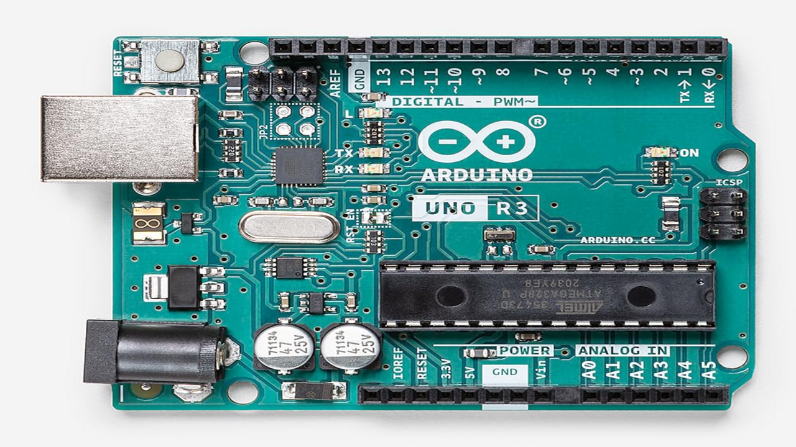
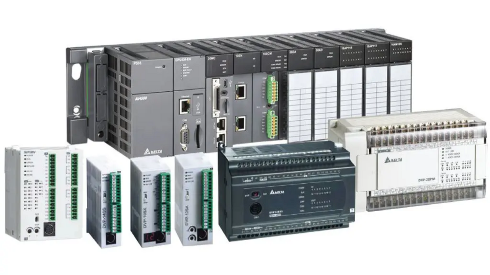
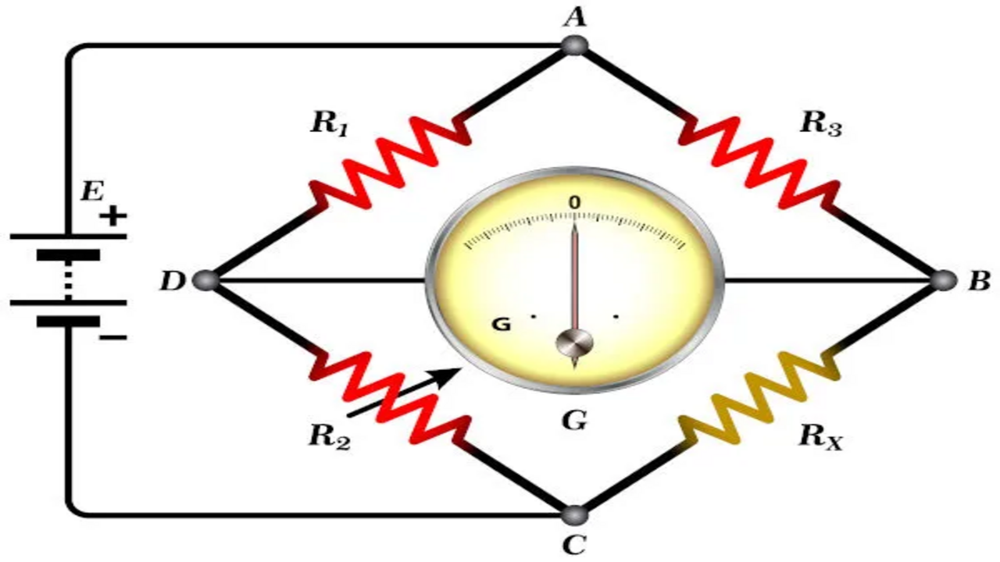
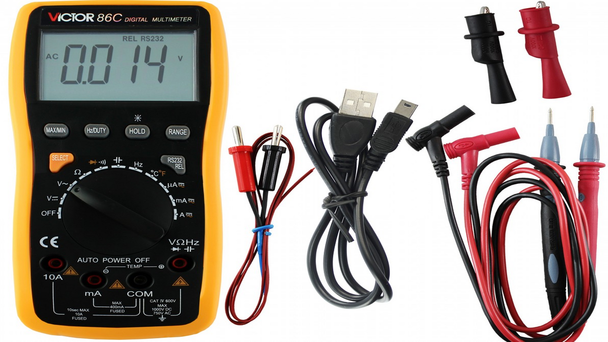

Arduino
É uma plataforma de hardware e software de código aberto, permitindo a criação de projetos interativos e protótipos. Alguns detalhes e informações de projetos
É uma plataforma de hardware e software de código aberto, permitindo a criação de projetos interativos e protótipos. Alguns detalhes e informações de projetos
A escala analógica do Arduino é: Binário: 0 - 1023, Físico: 0 - 100%, Volts: 0 - 5.

O Arduino é uma plataforma de prototipagem eletrônica que permite criar e controlar circuitos de forma simples usando programação.
No Arduino, entrada analógica é aquela capaz de ler valores variados de tensão, normalmente de 0 a 5 volts. Esses valores são convertidos pelo conversor analógico-digital em números, de 0 a 1023 no Arduino Uno, permitindo medir grandezas como temperatura, luz ou intensidade de som.
Já a entrada digital lê apenas dois estados possíveis que é 0 - 1, 0V - 5V.
O CLP (Controlador Lógico Programável) é um equipamento eletrônico usado para automatizar processos industriais. Ele recebe sinais de sensores e dispositivos de entrada, e controla atuadores, como motores, válvulas e luzes, para executar tarefas de forma automática, segura e confiável.

O CLP é um dispositivo que automatiza máquinas e processos industriais de forma programada.
Em um CLP (Controlador Lógico Programável), as entradas servem para “ler” sinais vindos de sensores, botões, chaves etc. Entrada Digital: 0 - 1 / 0 - 24V. Entrada Analógica: 0 – 10V, 4mA – 20mA.
A Ponte de Wheatstone é um circuito elétrico utilizado para medir resistências desconhecidas com alta precisão. Ela funciona com equilibrio de quatro resistores. Quando a ponte está balanceada, a tensão entre dois pontos centrais é zero, permitindo calcular a resistência desconhecida. É usada em sensores, como termistores, para converter variações físicas em sinais elétricos calculáveis.
Rx = R2 * R3/R1

A Ponte de Wheatstone é um circuito usado para medir resistências desconhecidas com precisão, equilibrando quatro resistores em um esquema de losango.
O multímetro é um instrumento de medição elétrica que combina várias funções em um único aparelho, permitindo medir grandezas como tensão, corrente e resistência. Também permitem testar continuidade. O multímetro é amplamente utilizado em eletrônica, sendo uma ferramenta essencial para diagnosticar circuitos, verificar componentes e garantir o funcionamento correto de sistemas elétricos.

O multímetro é um instrumento que mede tensão, corrente e resistência em circuitos elétricos.